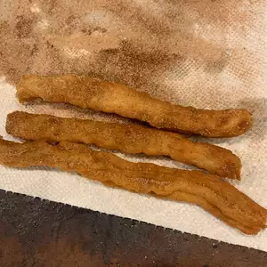

Churros Recipe

Description
Flour fritters recipe.
Recipe taken from allrecipes.com
Ingredients
- 1 cup of watel
- 2 1/2 tablespoons of white sugar
- 1/2 teaspoon of salt
- 2 teaspoons of vegetable oil
- 1 cup of all-purpose flour
- 2 quarts of oil for frying
- 1/2 cup of white sugar, or to taste
- 1 teaspoon of ground cinnamon
Steps
-
In a small saucepan over medium heat, combine water, 2 1/2 tablespoons of sugar, salt and 2 tablespoons of vegetable oil.
Bring to a boil and remove from heat. Stir in flour until the mixture forms a ball.
-
Heat oil for frying in a deep fryer or deep pot to 375 degrees F(190 C).
Pipe 5-6 inch strips of dough into the hot oil using a sturdy pastry bag fitted with a medium star tip. Do not overcrowd the oil.
Fry until golden; drain on paper towels.
- Combine 1/2 cup of sugar and cinnamon. Roll drained churros in cinnamon and sugar mixture.